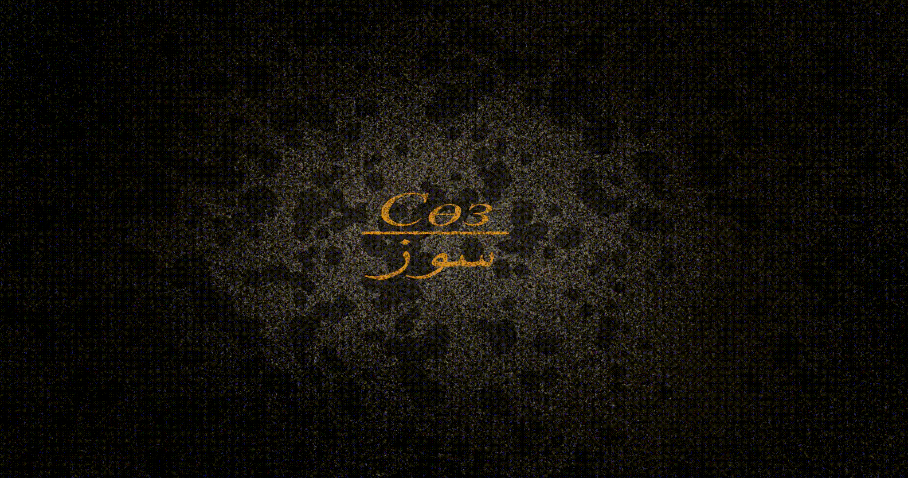
The Word
Synopsis
This is a story about Abai Kunanbaiuly, who, while trying to write a poem, journeys into his own mind. As he searches for the words he needs for his poem, he encounters a variety of strange and symbolic images along the way.
Clear animation
Here you can see four excerpts from my clean-up animation, all drawn by me. These clips do not yet include the backgrounds or the character’s colors. However, the key visuals below will give you an idea of what the final animation will look like.
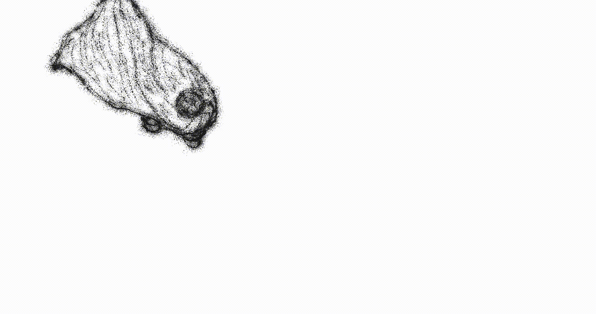
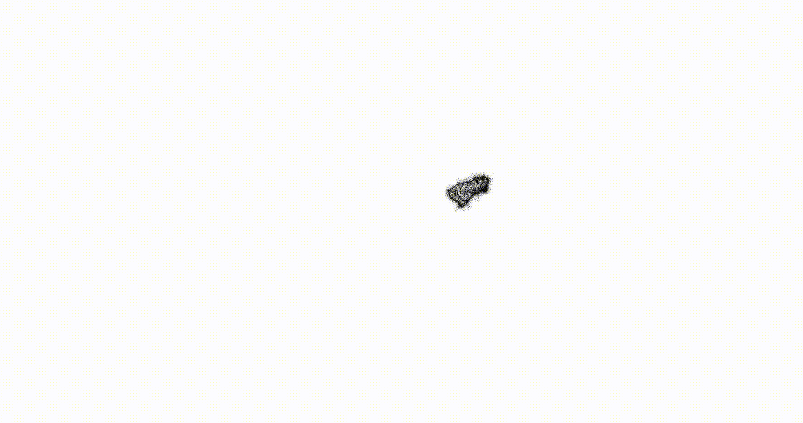


Process
My creative process is unusual, just like the visual style itself. We animate not only the characters but also the background. I need a unique kind of light that emanates from Abai Qunanbaiuly himself.
I always start by drawing a key visual — an initial concept of how the shot should look. Then I move on to the storyboard, followed by the animatic and finally the animation itself.
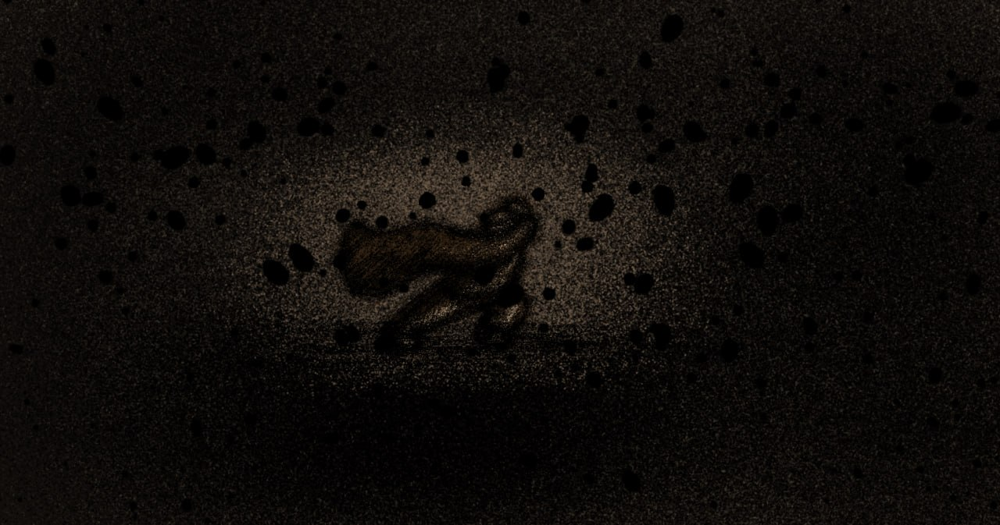
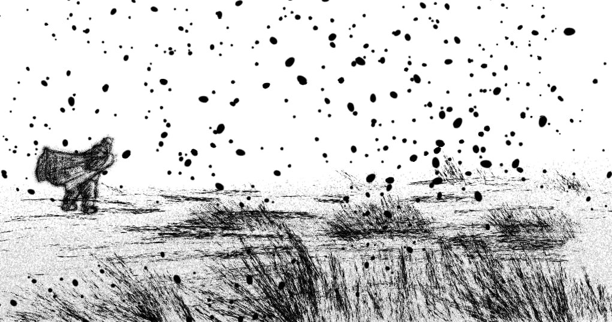
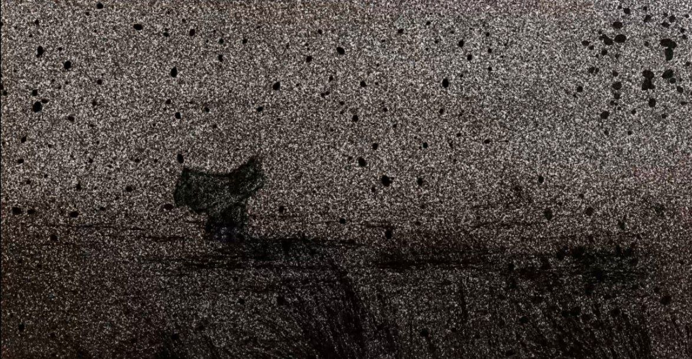
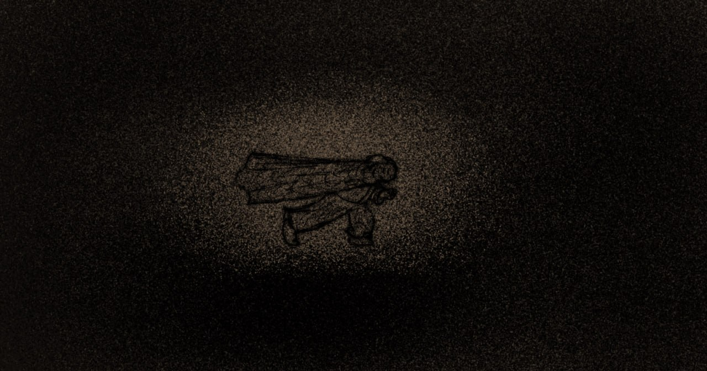
Character design
Initially, I had a different idea for the main character. I wanted to tell the story of an ordinary, unknown poet living in isolation. However, after rereading Abai Qunanbaiuly’s poetry, I realized that he would be a perfect fit for my short film. To make the story more engaging and appealing to a wider audience, I decided to make Abai the main character and adapt the story specifically around his personality, philosophy, and poetry.
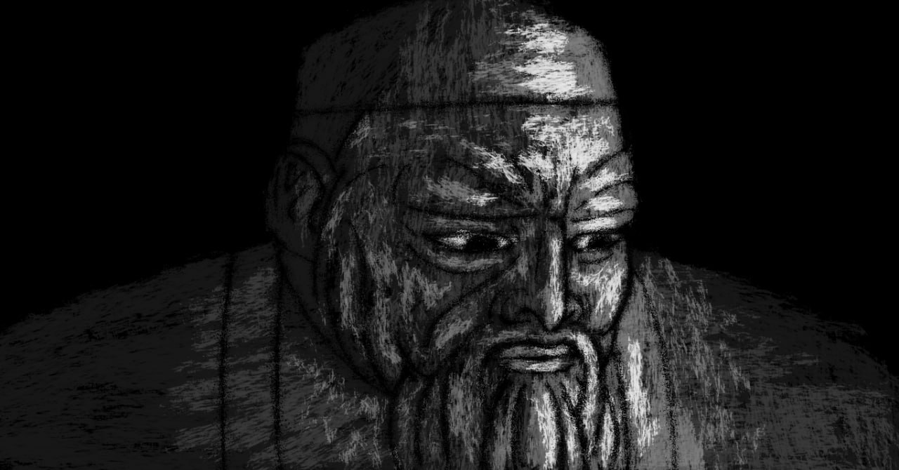
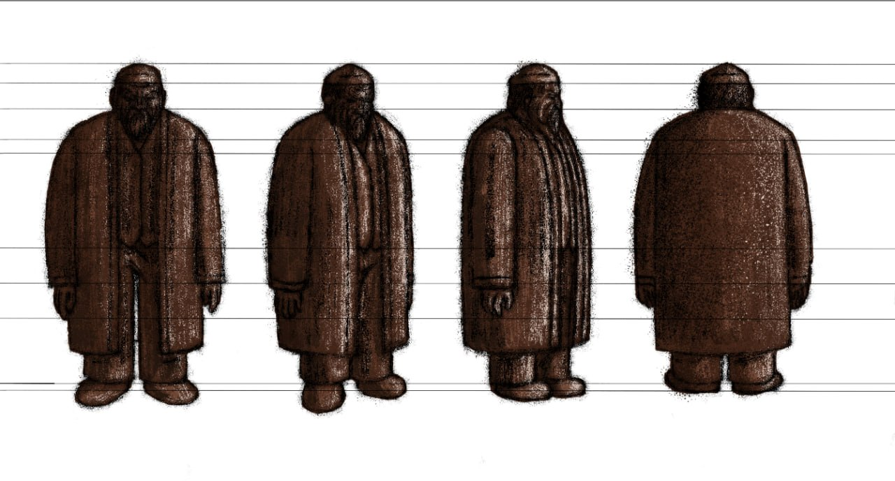
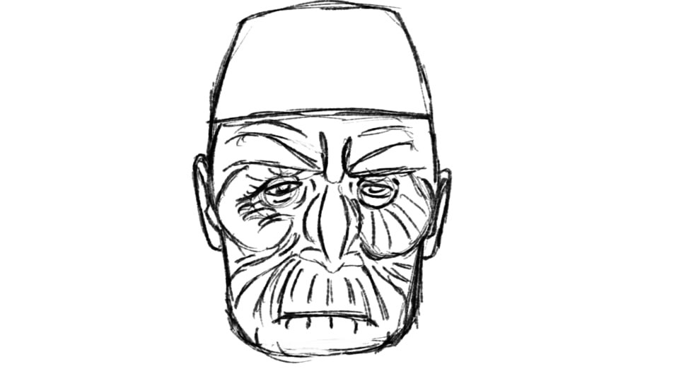
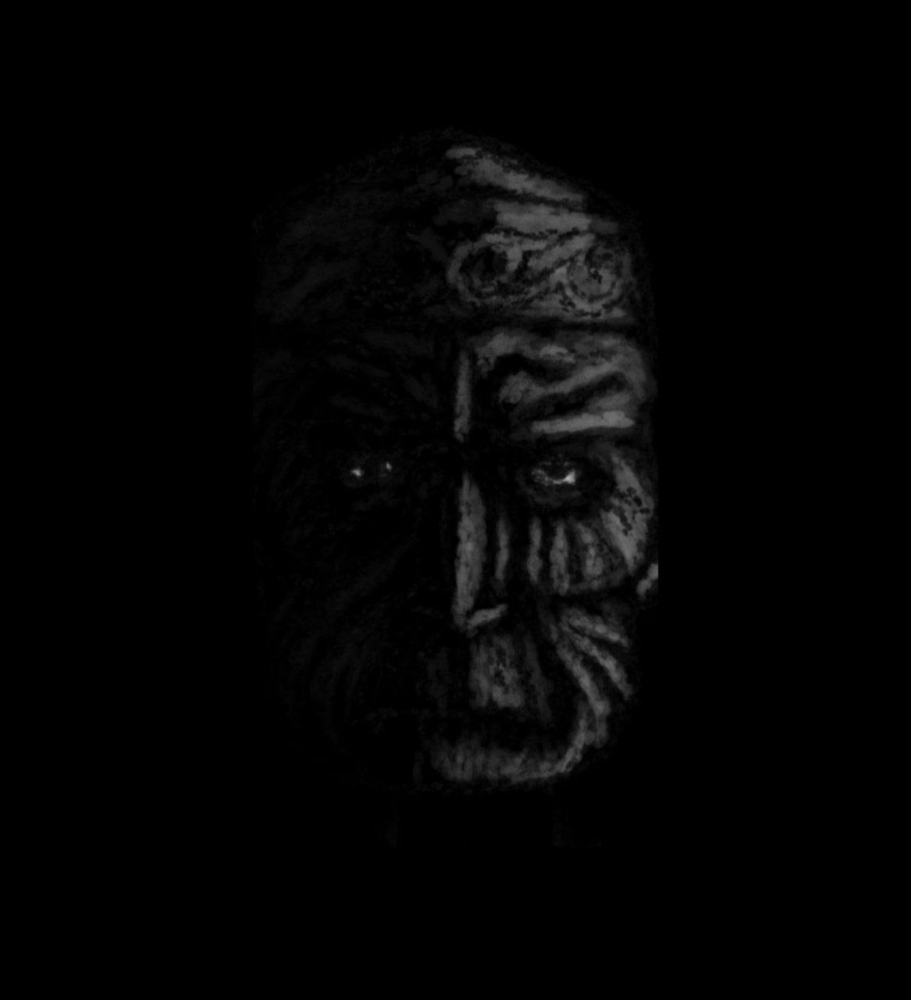